Next: Hetero-dimer
Up: Analytical Results
Previous: Analytical Results
Contents
Index
The system-bath interaction operators are
 |
(6.11) |
If both energy gap fluctuate with the same energy gap correlation
function  , and the fluctuations on individual sites are independent
from each other (
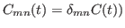, the rate 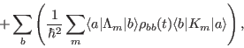
of the energy transfer from state 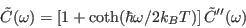 to state 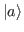
reads as (we set
, and the fluctuations on individual sites are independent
from each other (
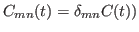, the rate 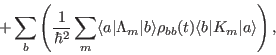
of the energy transfer from state 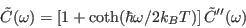 to state 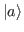
reads as (we set  )
)
For a homodimer all coefficients
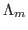
and the sum over  gives two contributions which are exactly the
same. This means
gives two contributions which are exactly the
same. This means
 |
(6.13) |
For an overdumped Brownian oscillator spectral density
we have
Given that for a homodimer
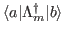 we have
 |
(6.16) |
This formula is used to test the calculations of Redfield rates and
of the Redfield tensor in Quanta
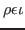.
Next: Hetero-dimer
Up: Analytical Results
Previous: Analytical Results
Contents
Index
Tomas Mancal
2016-10-10